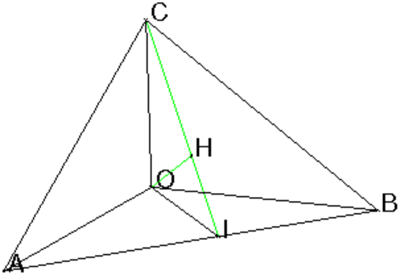
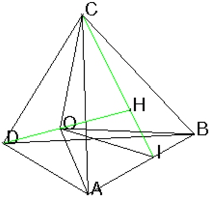
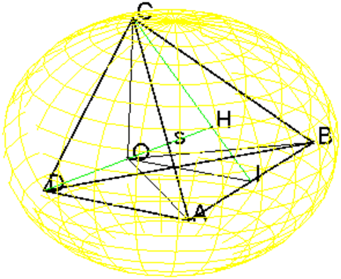

Retour à la page personnelle de Bernard Parisse.Chapitre 8 Un exemple de géométrie dans l’espace
8.1 L’énoncé
Soient OABC un tétraèdre tel que :
-
OAB, OAC, OBC sont des triangles rectangles
- OA=OB=OC=1
Soient I le pied de la hauteur issue de C du triangle ABC
H le pied de la hauteur issue de O du triangle OIC et
D le point défini par OD=HO
Montrer :
-
Les droites OH et AB sont orthogonales
- H est l’orthocentre du triangle ABC
- Calculer OH
- Le tétraèdre ABCD est régulier
- Calculer les coordonnées du centre s de la sphère
circonscrite à ABCD.
8.2 La solution avec Xcas
On ouvre un niveau de géométrie 3-d (Alt+h), on choisit comme
repère (O;OA,OB,OC) et
on tape :
O:=point([0,0,0]);
A:=point([1,0,0]);
B:=point([0,1,0]);
C:=point([0,0,1]);
pyramide(O,A,B,C);
I:=projection(droite(A,B),C);
segment(C,I,affichage=2+ligne_tiret);
H:=projection(droite(I,C),O);
segment(O,H,affichage=2+ligne_tiret);
segment(O,I);
D:=translation(O-H,O);
On obtient :

8.2.2 Les réponses aux questions
-
On tape :
est_orthogonal(droite(A,B),droite(O,H))
On obtient :
1
On tape :
longueur(I,H),longueur(C,H),longueur(C,I)
On obtient :
(sqrt(6))/6,(sqrt(6))/3,(sqrt(6))/2
On tape :
equation(droite(C,I))
On obtient :
1/2*x+(-1)/2*y=0,-1/2*x-1/2*y-1/2*z+1/2=0
On tape :
equation(plan(O,C,I))
On obtient :
-1/2*x-(-1)/2*y=0
On tape :
B-A,H-O,dot(B-A,H-O)
On obtient :
[-1,1,0],[1/3,1/3,1/3],0
- On tape :
est_equilateral(A,B,C)
On obtient :
1
On tape :
B-C,H-A,dot(B-C,H-A)
On obtient :
[0,1,-1],[(-2)/3,1/3,1/3],0
On tape :
est_orthogonal(droite(C,B),droite(A,H))
On obtient :
1
- On tape :
coordonnees(H)
On obtient :
[1/3,1/3,1/3]
On tape :
longueur(O,H)
On obtient :
(sqrt(3))/3
- On complète la figure en tapant :
D:=translation(O-H,O);
segment(D,H,affichage=2+ligne_tiret);
pyramide(D,A,B,C,affichage=epaisseur_ligne_2)
On obtient :

On tape :
longueur(A,B),longueur(B,C),longueur(C,A)
On obtient :
sqrt(2),sqrt(2),sqrt(2)
On tape :
longueur(A,D),longueur(B,D),longueur(C,D)
On obtient :
sqrt(2),sqrt(2),sqrt(2)
- On tape, si on sait que le centre s de la sphère circonscrite au
tétraèdre régulier ABCD est l’isobarycentre des points A,B,C,D :
c:=coordonnees(isobarycentre(A,B,C,D))
On obtient :
[1/6,1/6,1/6],0]
Puis, on tape :
s:=point(c)
Si on ne sait pas que Le centre s de la sphère circonscrite à un
tétraèdre régulier ABCD est l’isobarycentre des points A,B,C,D,
on tape :
d:=inter(mediatrice(A,B),mediatrice(A,C));
s:=inter_unique(mediatrice(A,D),d)
On obtient :
pnt(pnt[point[1/6,1/6,1/6],0])
Puis, on tape :
r:=normal(longueur(A,s))
On obtient :
sqrt(3)/2
On tape :
sphere(s,r)
On obtient :

8.3 La solution en géométrie pure
-
Montrons que les droites OH et AB sont orthogonales.
Le triangle ABC est équilatéral car les triangles OAB, OAC, OBC
sont des triangles rectangles isocèles égaux.
on a AB=BC=CA=√2
AB est perpendiculaire à CI car CI est une hauteur (et aussi médiane)
du triangle équilatéral ABC.
AB est perpendiculaire à OI car OI est une médiane et donc aussi
une hauteur du triangle isocèle OAB de sommet O.
Donc AB est perpendiculaire au plan COI donc AB est perpendiculaire à
toutes les droites du plan COI et en particulier à OH.
- Montrons que H est l’orthocentre du triangle ABC
OH est perpendiculaire au plan ABC car orthogonal à AB et à CI
qui sont 2 droites de ce plan.
OA=OB=OC=1 et H est la projection de O sur ABC donc HA=HB=HC.
H est donc le point de concours des médiatrices du triangle
équilatéral ABC donc H est aussi l’orthocentre du triangle ABC.
- Calculons OH
Le triangle COI est rectangle en O, CO=1,
CI=√2√3/2=√6/2 et OI=√2/2 donc
OH=OI× CO/CI=√3/3 - Montrons que le tétraèdre ABCD est régulier.
DH=2*OH=2√3/3
CH=2/3CI=√2√3/3
Le triangle DCH étant rectangle en H on en déduit que :
DC2=DH2+CH2=(12+6)/9=2
donc DC=√2
On montre de même que DA=√2 et que DB=√2.
On a donc
DA=DB=DC=AB=BC=CA=√2 donc
le tétraèdre ABCD est régulier.
Ou bien on fait comme Xcas, on choisit comme repère
(O,OA,OB,OC) et on
cherche les coordonnés de H dans ce repère.
H etant le point de concours des médiatrices du triangle
équilatéral ABC de cotés √2, on a HI=CI/3 et donc
zH=1/3
H est dans le plan ABC d’équation x+y+z=1 et dans le plan COI
d’équation x=y donc xH+yH=2/3 et xH=yH donc H a pour coordonnées
[1/3,1/3,1/3].
On a OD=HO donc D a pour coordonnées
[−1/3,−1/3,−1/3].
On calcule alors DC2=1/9+1/9+(1+1/3)2=2
- Calculons le rayon et les coordonnées du centre s de la sphère
circonscrite à ABCD.
On suppose que l’on sait que le centre s de la sphère circonscrite au
tétraèdre régulier ABCD est l’isobarycentre des points A,B,C,D.
4Os=OA+OB+OC+OD donc puisque (1−1/3)/4=1/6
Os a pour coordonnées : [1/6,1/6,1/6].
Le rayon est donc r=As=√(25+1+1)/36=√3/2.
Si on ne sait pas que Le centre s de la sphère circonscrite à un
tétraèdre régulier ABCD est l’isobarycentre des points A,B,C,D, on
cherche un point s équidisdant de A,B,C,D. s est sur le segment DH
car tous les points de ce segment sont équidisdant de A,B,C.
On pose Hs=l et on a :
AH=√2*√3/3*2/3=√6/3 car H est le centre de gravité du
triangle équlatéral ABC de coté √2.
As2=AH2+l2=2/3+l2 car le triangle HAs est rectangle en H.
DH2=AD2−AH2=2−2/3=4/3 car le triangle HAD est rectangle en H.
donc Ds2=(DH−l)2=As2=2/3+l2
2l*DH=2/3 et DH=2/√3=2√3/3
Hs=l=1/(3DH)=√3/6=DH/4
s est donc le milieu de OH et r=Ds=3DH/4=√3/2.
Retour à la page personnelle de Bernard Parisse.